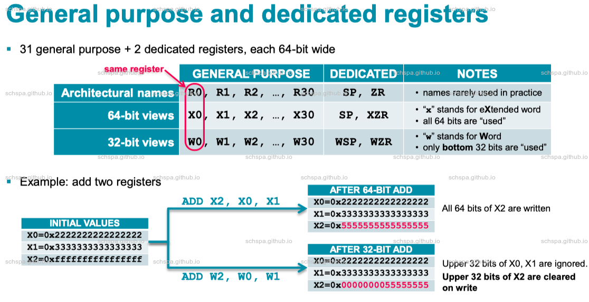

AARCH64 native problem debug.
Agenda
AARCH64 Native Debug Knowledge
ARMv8-A A64 ISA Overview
Generic Registers

Addressing modes
| Address Mode | example | Explanation |
|---|---|---|
| Simple | LDR W0, [X1] | X1 is not changed |
| offset | LDR W0, [X1, #4] | X1 is not changed |
| Pre-indexed | LDR W0, [X1, #4]! | X1 is changed before load |
| Post-indexed | LDR W0, [X1], #4 | X1 is changed after load |
Programmer’s Guide for ARMv8-A
Exception Types
- Interrupts
- Happend when FIQ & IRQ physical signal send to the CPU Core.
- Aborts
- Generated by failed instruction fetches (instruction aborts) or failed data accesses (Data Aborts).
- Reset
- For Reset Signal
- Exception
- generating instructions SVC, HVC, SMC etc.
Exception Flow
Exception Register
- ELR_ELx
- Entrypoint to execute when Exception Handled
- SPSR_ELx
- PSTATE backup
- FAR_ELx
- Fault Address Register
- ESR_ELx
- Exception Syndrome Register
Synchronous and and asynchronous exceptions
- Synchronous
- It is generated as a result of execution or attempted execution of the instruction stream, and where the return address provides details of the instruction that caused it.
- Asynchronous
- It is not generated by executing instructions, while the return address might not always provide details of what caused the exception.
examples
- IRQ, FIQ, SError
All trigger by external physical signals, All of this should be asynchronous abort. - MMU dataabort, System Calls, Secure Mointor Calls, Undefined Instruction, Debug exception etc.
Procedure Call Standard
| Arch | documentation |
| ARM | Procedure Call Standard for the Arm® Architecture |
| ARM64 | Procedure Call Standard for the Arm® 64-bit Architecture |
Debugger
GDB
- Symbols
- Control
- Thread, frame, signal
- viewing, showing
| Comamnd | Usage |
| add-symbol-file | To add symbols to gdb |
| set solib-search-path | Set the search path for loading non-absolute shared library symbol files. |
| set sysroot | Set an alternate system root. |
| Comamnd | Usage |
| b | Set breakpoint at specified location. |
| hb | Set a hardware assisted breakpoint. |
| finish | run until selected stack frame returns |
| return | pop selected stack frame without executing |
| Comamnd | Usage |
| info threads | Display currently known threads. |
| thread | Use this command to switch between threads. |
| info frame | All about the selected stack frame. |
| frame | Select and print a stack frame. |
| signal | ontinue program with the specified signal. |
| command | execute GDB command-list every time breakpoint n is reached. |
| Comamnd | Usage |
| set pagination | Set state of GDB output pagination. |
| set substitute-path | Add a substitution rule to rewrite the source directories. |
| whatis | show data type of expr [or $] without evaluating |
| ptype | describe type, struct, union, or enum |
#!/usr/bin/env python# -*- coding: utf-8 -*-## load-linux-init.py --- Load linux kernel init section## Copyright (C) 2020, schspa, all rights reserved.## This program is free software; you can redistribute it and/or modify# it under the terms of the GNU General Public License as published by# the Free Software Foundation; either version 2 of the License, or# (at your option) any later version.## This program is distributed in the hope that it will be useful,# but WITHOUT ANY WARRANTY; without even the implied warranty of# MERCHANTABILITY or FITNESS FOR A PARTICULAR PURPOSE. See the# GNU General Public License for more details.## You should have received a copy of the GNU General Public License# along with this program. If not, see <http://www.gnu.org/licenses/>.#import reimport gdbfrom subprocess import check_output, CalledProcessErrorclass LoadLinuxKernelInitCommand(gdb.Command):"Load Linux Kernel init text from vmlinux"def __init__(self):super(LoadLinuxKernelInitCommand,self).__init__("load-linux-init", gdb.COMMAND_SUPPORT,gdb.COMPLETE_EXPRESSION, True)def get_load_address(self, path, section):'''[Nr] Name Type Address Off Size ES Flg Lk Inf Al[ 0] NULL 0000000000000000 000000 000000 00 0 0 0[ 1] .head.text PROGBITS ffffff8008080000 010000 001000 00 AX 0 0 4096[ 2] .text PROGBITS ffffff8008081000 011000 5ee1b0 00 AX 0 0 2048'''ELF_PATTERN = re.compile(r"^[\s]*\[(?P<NUM>[0-9 ]+)\]" +r"[\s]+(?P<NAME>[\S]+)" +r"[\s]+(?P<Type>[\S]+)" +r"[\s]+(?P<Address>[\S]+)" +r"[\s]+(?P<Off>[\S]+)" +r"[\s]+(?P<Size>[\S]+)" +r"[\s]+(?P<ES>[\S]+)" +r"[\s]+(?P<Flg>[\S]+)")command = r"readelf -WS " + path + r"| grep -E '[[:space:]]+'" + sectionoutput = check_output([command], shell=True).decode("utf-8")obj = re.search(ELF_PATTERN, output)if obj is not None:load_addr = int(obj['Address'], 16)return load_addrdef invoke(self, arg, from_tty):argv = gdb.string_to_argv(arg)if len(argv) != 2:raise gdb.GdbError("load-linux-init takes two argument")load_addr = int(str(gdb.parse_and_eval(argv[1])))print("Loading linux init head to 0x%016x" % (load_addr))head_init_addr = self.get_load_address(argv[0], ".head.text")print("Original linux text address at 0x%016x" % (head_init_addr))offset = head_init_addr - load_addrtext_addr = self.get_load_address(argv[0], ".text") - offsetinit_text_addr = self.get_load_address(argv[0], ".init.text") - offsetcommand = "add-symbol-file {:s} 0x{:x} -s .head.text 0x{:x} -s .init.text 0x{:x}".format(argv[0], text_addr, load_addr, init_text_addr)print("load linux image to physical address with command {:s}".format(command))gdb.execute(command)LoadLinuxKernelInitCommand()# Local Variables:# indent-tabs-mode: t# tab-width: 8# End:
Trace32
- Linux Attach
主要用来查看Linux系统中所有task的stacktrace
SET mypath=%~dp0start C:\T32\bin\windows64\t32MARM64.exe -s %mypath%\linux-attach.cmm "%mypath%" "U:/vmlinux" "/Volumes/work/j5/kernel/" U:/j5/kernel
DS5
- 主要用来调试Baremetal以及简单的OS，对Linux的支持非常差，约等于0
- 在打断点时，需要先加载好镜像，然后再打断点，否则断点无效
| Function | Descrription |
| add-symbol-file | Loads additional debug information into the debugger. |
| set substitute-path | Modifies the search paths used by the debugger when it executes any of the commands that look up and display source code. |
| reload-symbol-file | Reloads debug information from an already loaded image into the debugger using the same settings as the original load operation. |
| discard-symbol-file | Discards debug information relating to a specific file. |
DS5 script
#!/usr/bin/env python2# -*- coding: utf-8 -*-import osimport sysimport structfile_path = os.path.abspath(os.path.dirname(__file__))ms = None;try:from arm_ds.debugger_v1 import Debuggerfrom arm_ds.debugger_v1 import DebugException# Debugger object for accessing the debuggerdebugger = Debugger()# Initialisation commandsec = debugger.getExecutionContext(0)ec.getExecutionService().stop()ec.getExecutionService().waitForStop()ms = ec.getMemoryService();except BaseException as e:print(e)passif __name__ == '__main__':if len(sys.argv) < 3:print("Usage: source %s <address for dtb with base 16> <file_path>" % (sys.argv[0]))exit(-1)dtb_addr = int(sys.argv[1], 16)print("Attempting to dump dtb from 0x%016x" %(dtb_addr))magic, totalsize, version = struct.unpack('>III', ms.read(dtb_addr, 12))print("magic: 0x%08x, totalsize: 0x%08x, version: 0x%08x" % (magic, totalsize, version))if magic != 0xd00dfeed:exit(-2)passms.dump(sys.argv[2], 'binary', dtb_addr, dtb_addr + totalsize)pass
OS Debug
U-Boot
U-Boot Debug before relocate
U-Boot Debug after relocate
u-boot Debugging
Linux
Linux Debug before MMU enable
Linux Debug after MMU enable
Debug linux kernel boot process
Native Crash Examples
StackFrame Analysis
Stack Frame
Regulator Function
- 分配栈空间
- 保存上下文寄存器
- 函数内逻辑
- 子过程调用
- 处理返回值
- 恢复寄存器上下文
- 恢复栈指针
- 返回
Source
/** p1 and p2 should be directories on the same fs.*/struct dentry *lock_rename(struct dentry *p1, struct dentry *p2){struct dentry *p;if (p1 == p2) {inode_lock_nested(p1->d_inode, I_MUTEX_PARENT);return NULL;}mutex_lock(&p1->d_sb->s_vfs_rename_mutex);p = d_ancestor(p2, p1);if (p) {inode_lock_nested(p2->d_inode, I_MUTEX_PARENT);inode_lock_nested(p1->d_inode, I_MUTEX_CHILD);return p;}p = d_ancestor(p1, p2);if (p) {inode_lock_nested(p1->d_inode, I_MUTEX_PARENT);inode_lock_nested(p2->d_inode, I_MUTEX_CHILD);return p;}inode_lock_nested(p1->d_inode, I_MUTEX_PARENT);inode_lock_nested(p2->d_inode, I_MUTEX_PARENT2);return NULL;}EXPORT_SYMBOL(lock_rename);
Disassemble
(gdb) disassemble /s lock_renameDump of assembler code for function lock_rename:fs/namei.c:2839 {2840 struct dentry *p;28412842 if (p1 == p2) {0xffffff800817e250 <+0>: stp x29, x30, [sp, #-48]! // 分配栈空间0xffffff800817e254 <+4>: cmp x0, x10xffffff800817e258 <+8>: mov x29, sp // 保存栈帧0xffffff800817e25c <+12>: stp x19, x20, [sp, #16] // 保存需要Callee保持的参数0xffffff800817e260 <+16>: mov x19, x00xffffff800817e264 <+20>: b.ne 0xffffff800817e27c <lock_rename+44> // b.any./include/linux/fs.h:748 down_write_nested(&inode->i_rwsem, subclass);0xffffff800817e268 <+24>: ldr x0, [x0, #48] // 先得到p1->d_inode, check with ptype /o struct dentry0xffffff800817e26c <+28>: mov x20, #0x0 // #00xffffff800817e270 <+32>: add x0, x0, #0xa0 // 再获取&p1->d_inode->i_rwsem check with ptype /o struct inode0xffffff800817e274 <+36>: bl 0xffffff80087846e8 <down_write> // 调用子函数，这里没有设置x1参数，因为最后调用的down_write只有一个参数fs/namei.c:2844 return NULL;0xffffff800817e278 <+40>: b 0xffffff800817e2f0 <lock_rename+160>2845 }28462847 mutex_lock(&p1->d_sb->s_vfs_rename_mutex);0xffffff800817e27c <+44>: str x21, [sp, #32]0xffffff800817e280 <+48>: mov x21, x10xffffff800817e284 <+52>: ldr x0, [x0, #104]0xffffff800817e288 <+56>: add x0, x0, #0x4180xffffff800817e28c <+60>: bl 0xffffff8008783950 <mutex_lock>28482849 p = d_ancestor(p2, p1);0xffffff800817e290 <+64>: mov x1, x190xffffff800817e294 <+68>: mov x0, x210xffffff800817e298 <+72>: bl 0xffffff800818dec8 <d_ancestor>0xffffff800817e29c <+76>: mov x20, x0 //整个过程之中，局部变量p全称都没有存储在stack中，这是个被优化掉的变量2850 if (p) {0xffffff800817e2a0 <+80>: cbz x0, 0xffffff800817e2c4 <lock_rename+116>./include/linux/fs.h:748 down_write_nested(&inode->i_rwsem, subclass);0xffffff800817e2a4 <+84>: ldr x0, [x21, #48]0xffffff800817e2a8 <+88>: add x0, x0, #0xa00xffffff800817e2ac <+92>: bl 0xffffff80087846e8 <down_write>0xffffff800817e2b0 <+96>: ldr x0, [x19, #48]0xffffff800817e2b4 <+100>: add x0, x0, #0xa00xffffff800817e2b8 <+104>: bl 0xffffff80087846e8 <down_write>fs/namei.c:2853 return p;0xffffff800817e2bc <+108>: ldr x21, [sp, #32]0xffffff800817e2c0 <+112>: b 0xffffff800817e2f0 <lock_rename+160>2854 }28552856 p = d_ancestor(p1, p2);0xffffff800817e2c4 <+116>: mov x1, x210xffffff800817e2c8 <+120>: mov x0, x190xffffff800817e2cc <+124>: bl 0xffffff800818dec8 <d_ancestor>0xffffff800817e2d0 <+128>: mov x20, x0./include/linux/fs.h:748 down_write_nested(&inode->i_rwsem, subclass);0xffffff800817e2d4 <+132>: ldr x0, [x19, #48]0xffffff800817e2d8 <+136>: add x0, x0, #0xa00xffffff800817e2dc <+140>: bl 0xffffff80087846e8 <down_write>0xffffff800817e2e0 <+144>: ldr x0, [x21, #48]0xffffff800817e2e4 <+148>: add x0, x0, #0xa00xffffff800817e2e8 <+152>: bl 0xffffff80087846e8 <down_write>fs/namei.c:2865 return NULL;0xffffff800817e2ec <+156>: ldr x21, [sp, #32]0xffffff800817e2f0 <+160>: mov x0, x20 // 准备返回值0xffffff800817e2f4 <+164>: ldp x19, x20, [sp, #16] // 恢复寄存器0xffffff800817e2f8 <+168>: ldp x29, x30, [sp], #48 //恢复栈帧0xffffff800817e2fc <+172>: ret // return指令返回LR(X30)指针所在位置End of assembler dump.
Variadic functions
- same with Regulator Function
- 保存X1-X7的寄存器到栈中
- 对va_list的处理
Souce
asmlinkage __visible int printk(const char *fmt, ...){va_list args;int r;va_start(args, fmt);r = vprintk_func(fmt, args);va_end(args);return r;}EXPORT_SYMBOL(printk);
Disassemble
(gdb) disassemble /sDump of assembler code for function printk:kernel/printk/printk.c:1990 {=> 0xffff000008127454 <+0>: stp x29, x30, [sp, #-176]! sp = 0xffff00000805bcf00xffff000008127458 <+4>: mov w8, #0xffffffc8 // #-56 sp = 0xFFFF00000805bc400xffff00000812745c <+8>: mov x29, sp x29 = sp, fp = 0xFFFF00000805bc400xffff000008127460 <+12>: add x9, sp, #0x70 x9= 0xFFFF00000805bcb00xffff000008127464 <+16>: add x10, sp, #0xb0 x10 = 0xffff00000805bcf0 i.e. stack_top0xffff000008127468 <+20>: str x19, [sp, #16] backup x19 to stack Local Variables0xffff00000812746c <+24>: adrp x19, 0xffff0000092b9000 <page_wait_table+5376>0xffff000008127470 <+28>: add x19, x19, #0x6c8 x19 = address of __stack_chk_guard0xffff000008127474 <+32>: stp x10, x10, [sp, #72] prepare va_list args0xffff000008127478 <+36>: str x9, [sp, #88] save x9 to 0xFFFF00000805BC980xffff00000812747c <+40>: ldr x9, [x19] load stack guard magic value to x9.0xffff000008127480 <+44>: str x9, [sp, #104] store stack guard magic value to stack on 0xFFFF00000805BCA8.0xffff000008127484 <+48>: mov x9, #0x0 // #00xffff000008127488 <+52>: stp w8, wzr, [sp, #96] 设置初始的__gr_offs0xffff00000812748c <+56>: ldp x8, x9, [sp, #72]0xffff000008127490 <+60>: stp x8, x9, [sp, #32]0xffff000008127494 <+64>: ldp x8, x9, [sp, #88]0xffff000008127498 <+68>: stp x1, x2, [sp, #120] 将x1 ~ x7放入GP Arg Save Area的区域0xffff00000812749c <+72>: add x1, sp, #0x200xffff0000081274a0 <+76>: stp x8, x9, [sp, #48]0xffff0000081274a4 <+80>: stp x3, x4, [sp, #136]0xffff0000081274a8 <+84>: stp x5, x6, [sp, #152]0xffff0000081274ac <+88>: str x7, [sp, #168] 已经将GP Arg Save Area设置好,va_list args参数已经处理好了。(gdb) i r pcpc 0xffff0000081274b0 0xffff0000081274b0 <printk+92>(gdb) p args$6 = {__stack = 0xffff00000805bcf0,__gr_top = 0xffff00000805bcf0,__vr_top = 0xffff00000805bcb0,__gr_offs = -56,__vr_offs = 0}0xffff0000081274b0 <+92>: bl 0xffff000008127e28 <vprintk_func>1996 va_end(args);19971998 return r;0xffff0000081274b4 <+96>: ldr x2, [sp, #104]0xffff0000081274b8 <+100>: ldr x1, [x19]0xffff0000081274bc <+104>: eor x1, x2, x10xffff0000081274c0 <+108>: cbz x1, 0xffff0000081274c8 <printk+116>0xffff0000081274c4 <+112>: bl 0xffff0000080d3d48 <__stack_chk_fail>0xffff0000081274c8 <+116>: ldr x19, [sp, #16]0xffff0000081274cc <+120>: ldp x29, x30, [sp], #1760xffff0000081274d0 <+124>: retEnd of assembler dump.
Crash Analysis
U-Boot Crash Due to firewall
- J5 memory Firewall
- DS5 断点
- DS5 脚本
- dtb overlay
分析问题的直接原因
看一下失败Log
U-Boot SPL 2018.09-00970-ga8d5cac867 (Apr 28 2021 - 10:52:12 +0800)BUILD_FLAGS: M:-1 __ AV:0Trying to boot from HB_BLKNOTICE: BL31: v2.1(debug):j5-fiq-test-37-gb75ca9aNOTICE: BL31: Built : 04:17:41, Jan 28 2021INFO: GICv3 without legacy support detected. ARM GICv3 driver initialized in EL3INFO: GICv3 GICTNS support enable.INFO: BL31: Initialising Exception Handling FrameworkINFO: BL31: Initializing runtime servicesINFO: hobotd malloc pool setup at 0x80274000, size:0x200000INFO: BL31: Preparing for EL3 exit to normal worldINFO: Entry point address = 0x88000000INFO: SPSR = 0x3c9INFO:hb_firewall_handler: irq 88 occured in EL3INFO: hb_firewall_handler: r: 1@0x0000000020000d14, w: 0@0x0000000020000000BACKTRACE: START: hb_firewall_handler0: EL3: 0x8003eccc1: EL3: 0x800072e42: EL3: 0x8000db3c3: EL3: 0x80044d54BACKTRACE: END: hb_firewall_handlerPANIC in EL3.x30 = 0x00000000800072f0x0 = 0x0000000000000000x1 = 0x0000000000000060x2 = 0x0000000000000060x3 = 0x0000000000000000x4 = 0x0000000000000000x5 = 0x0000000020000000x6 = 0x00000000880c5dc9x7 = 0x0000000000000003x8 = 0x0000000000000001x9 = 0x0000000041453020x10 = 0x0000000000000735x11 = 0x0000000082fbb9acx12 = 0x000000000000593cx13 = 0x0000000082fbba6cx14 = 0x00000000880bf2e8x15 = 0x0000000082fbbd7cx16 = 0x0000000000000000x17 = 0x0000000000000000x18 = 0x0000000000000000x19 = 0x000000008808f000x20 = 0x0000000080070190x21 = 0x000000008000d9b8x22 = 0x0000000000000000x23 = 0x0000000000000000x24 = 0x0000000000000000x25 = 0x0000000000000000x26 = 0x0000000000000000x27 = 0x0000000000000000x28 = 0x0000000000000000x29 = 0x0000000080068e90scr_el3 = 0x0000000000000735sctlr_el3 = 0x0000000030cd183fcptr_el3 = 0x0000000000000000tcr_el3 = 0x000000008081351ddaif = 0x00000000000002c0mair_el3 = 0x00000000004404ffspsr_el3 = 0x00000000800003c9elr_el3 = 0x000000008802b018ttbr0_el3 = 0x000000008007a801esr_el3 = 0x000000005e000000far_el3 = 0x0000000000000000spsr_el1 = 0x0000000000000000elr_el1 = 0x0000000000000000spsr_abt = 0x0000000000000000spsr_und = 0x0000000000000000spsr_irq = 0x0000000000000000spsr_fiq = 0x0000000000000000sctlr_el1 = 0x0000000030d00800actlr_el1 = 0x0000000000000000cpacr_el1 = 0x0000000000000000csselr_el1 = 0x0000000000000000sp_el1 = 0x0000000000000000esr_el1 = 0x0000000000000000ttbr0_el1 = 0x0000000000000000ttbr1_el1 = 0x0000000000000000mair_el1 = 0x0000000000000000amair_el1 = 0x0000000000000000tcr_el1 = 0x0000000000000000tpidr_el1 = 0x0000000000000000tpidr_el0 = 0x0000000000000000tpidrro_el0 = 0x0000000000000000par_el1 = 0x000000000000080dmpidr_el1 = 0x0000000081000000afsr0_el1 = 0x0000000000000000afsr1_el1 = 0x0000000000000000contextidr_el1 = 0x0000000000000000vbar_el1 = 0x0000000000000000cntp_ctl_el0 = 0x0000000000000000cntp_cval_el0 = 0x0000000000000000cntv_ctl_el0 = 0x0000000000000000cntv_cval_el0 = 0x0000000000000000cntkctl_el1 = 0x0000000000000000sp_el0 = 0x0000000080068e90isr_el1 = 0x0000000000000000dacr32_el2 = 0x0000000000000000ifsr32_el2 = 0x0000000000000000cpuectlr_el1 = 0x000000002808bc00
- firewall中断
hb_firewall_handler: irq 88 occured in EL3INFO: hb_firewall_handler: r: 1@0x0000000020000d14, w: 0@0x0000000020000000BACKTRACE: START: hb_firewall_handler0: EL3: 0x8003eccc1: EL3: 0x800072e42: EL3: 0x8000db3c3: EL3: 0x80044d54这个地方只看第二行打印的地址就可以了， r: 1@0x0000000020000d14, w: 0@0x0000000020000000
INFO("%s: r: %u@0x%016llx, w: %u@0x%016llx \n", __func__,r_master, r_far, w_master, w_far);r: 读取
1@0x0000000020000d14: master 1 在读取0x0000000020000d14地址时被拦截
master 1: MFW_MASTER_ID_CPU
- 触发源
由于firewall通过中断来触发, 这里的ELR寄存器仅供参考, ESR, FAR寄存器没有参考意义
elr_el3 = 0x000000008802b018esr_el3 = 0x000000005e000000far_el3 = 0x0000000000000000在此例中，由于没有smp，也没有中断的干扰，所以，ELR_EL3基本会是在出错的指令附近
反编译uboot, 可以看到，大致位址就是在通过map来读取数据时.
Dump of assembler code for function regmap_mmio_read32le:drivers/core/regmap-mmio.c:27 {28 struct regmap *map = ctx->map;29 u32 *ptr = map_physmem(map->ranges[0].start + offset, 4, MAP_NOCACHE);0x000000008802b008 <+0>: 00 00 40 f9 ldr x0, [x0]0x000000008802b00c <+4>: e1 03 01 2a mov w1, w10x000000008802b010 <+8>: 00 18 40 f9 ldr x0, [x0, #48]3031 *valp = le32_to_cpu(readl(ptr));0x000000008802b014 <+12>: 20 68 60 b8 ldr w0, [x1, x0]0x000000008802b018 <+16>: bf 3f 03 d5 dmb sy0x000000008802b01c <+20>: 40 00 00 b9 str w0, [x2]3233 return 0;34 }0x000000008802b020 <+24>: 00 00 80 52 mov w0, #0x0 // #00x000000008802b024 <+28>: c0 03 5f d6 retEnd of assembler dump.
分析dtb overlay失败的原因
- 源代码
int merge_dtb(void *dst, void *src){u32 fdt_size;int ret;if (dst == NULL || src == NULL)return 0;/*** in FPGA environment, dtb will be load to memory directly.* In this case, dst will be same as src, because we use same dtbs*/if (dst == src)return 0;if (fdt_magic(dst) != FDT_MAGIC || fdt_magic(src) != FDT_MAGIC) {return -EINVAL;}/*** overlay device tree properties* there is some services populated by secure monitor.* overlay our base device tree.*/fdt_size = fdt_totalsize(dst);assert(fdt_size <= sizeof(backup_buffer));memcpy(backup_buffer, dst, fdt_size);ret = fdt_overlay_apply_verbose(dst, src);if (ret) {pr_err("dtb overlay failed with status %d\n", ret);memcpy(dst, backup_buffer, fdt_size);}return ret;}
- 在出故障的地方打上断点
DS5中，必须在镜像加载之后打上的断点才能起作用，使用时需要格外注意
>hb spl_perform_fixupsHardware breakpoint 2 at EL3:0x0000000020002F64on file spl.c, line 412on file spl.c, line 414>cExecution stopped in EL3h mode at breakpoint 2: EL3:0x0000000020002F64In spl.cUnable to read source file /home/bin.zhu/jenkins/workspace/platform_j5/j5_testing@2/uboot/board/hobot/j5/spl/spl.cEL3:0x0000000020002F64 412,0 MOV w1,#0x19>bt#0 spl_perform_fixups(spl_image = (struct spl_image_info*) 0x2001BD08) at spl.c:412#1 [board_init_r+0xEC]#2 [_main+0x28]>hb *EL2N:0x88000000Hardware breakpoint 3 at EL2N:0x0000000088000000>cExecution stopped in EL2h mode at breakpoint 3: EL2N:0x0000000088000000EL2N:0x0000000088000000 B {pc}+40 ; 0x88000028>bt#0 [EL2N:0x0000000088000000]>add-symbol-file ~/symbols/boot/u-boot>hb merge_dtbHardware breakpoint 4 at EL2N:0x00000000880039BCon file dtb_overlay.c, line 33
- 调试dtb overlay的相关函数，使用DS5脚本来dump dtb
>cExecution stopped in EL2h mode at breakpoint 4: EL2N:0x00000000880039BCIn dtb_overlay.cUnable to read source file /home/bin.zhu/jenkins/workspace/platform_j5/j5_testing@2/uboot/board/hobot/j5/dtb_overlay.cEL2N:0x00000000880039BC 33,0 STP x29,x30,[sp,#-0x30]!>i r x0 x1X0 0x00000000880BF2E8X1 0x000000008005FF40>source ~/work/src/fpga-script/script/dump_dtbs.py 0x00000000880BF2E8 x0.dtb>source ~/work/src/fpga-script/script/dump_dtbs.py 0x000000008005FF40 x1.dtb>b putsBreakpoint 5.1 at EL3:0x0000000020006044on file console.c, line 537Breakpoint 5.2 at EL2N:0x000000008801F8FCon file console.c, line 537on file console.c, line 548>cExecution stopped in EL2h mode at breakpoint 5.2: EL2N:0x000000008801F8FCIn console.cEL2N:0x000000008801F8FC 537,0 {>p s$10 = 0x82FBBB58 "failed on fdt_overlay_apply(): FDT_ERR_NOTFOUND">bt#0 puts(s = 0x82FBBB58 "failed on fdt_overlay_apply(): FDT_ERR_NOTFOUND
dtb overlay失败的原因
从上边的操作log来看，失败原因是 FDT_ERR_NOTFOUND ,一般在对应需要overlay的节点找不到时才会报这个错误.
上边已经把fdt_overlay_apply_verbose函数的输入已经dump到文件中了，接下来分析这两个dtb文件既可
- 反编译dtb
dtc -I dts -O dtb -o x0.dts x0.dtbdtc -I dts -O dtb -o x1.dts x1.dtb
- x0相关信息:
__symbols__ {pmu = "/pmu@aon";gic = "/interrupt-controller@58000000";vmmcsd_fixed = "/fixedregulator";vmcsd1_fixed = "/fixedregulator1";tee_regmap = "/tee_regmap_services";gclk3 = "/gclk3";cspi0 = "/cspi@0x48020000";nor = "/cspi@0x48020000/flash@0";nand = "/cspi@0x48020000/flash@1";hyper = "/cspi@0x48020000/flash@2";hb_sci = "/hb_sci@boot_flags";-decoder = "/hb_sci@sec_boot_flags";ns,rclk-en = "/firmware@tee";n = "/psci";ess = "/reserved-memory";};
- x1相关信息
__fixups__ {firmware = "/fragment@0:target:0";reserved_memory = "/fragment@1:target:0";psci = "/fragment@2:target:0";tee_regmap = "/fragment@3:target:0";hb_sci = "/fragment@4:target:0";hb_sec_sci = "/fragment@5:target:0";soc = "/fragment@6:target:0";};
根据dtb overlay的原理，__fixups__对应的条目，必须在__symbols__里边能有相应的匹配项，才能overlay成功.
由上面的结果，很容易可以看出x0都应的symbol里边有部份条目不正常. x0是uboot.bin镜像中自带的dtb，尝试从image中dump出该dtb
- dtb in image
find offset in uboot.img.bin
Section Headers:[Nr] Name Type Address Off Size ES Flg Lk Inf Al[ 0] NULL 0000000000000000 000000 000000 00 0 0 0[ 1] .text PROGBITS 0000000088000000 010000 000128 00 AX 0 0 8[ 2] .efi_runtime PROGBITS 0000000088000128 010128 000990 00 WAX 0 0 8[ 3] .text_rest PROGBITS 0000000088001000 011000 07514c 00 AX 0 0 2048[ 4] .rodata PROGBITS 0000000088076150 086150 0263a7 00 A 0 0 8[ 5] .hash HASH 000000008809c4f8 0ac4f8 000018 04 A 0 0 8[ 6] .data PROGBITS 000000008809c510 0ac510 00679e 00 WA 0 0 8[ 7] .got PROGBITS 00000000880a2cb0 0b2cb0 000008 08 WA 0 0 8[ 8] .got.plt PROGBITS 00000000880a2cb8 0b2cb8 000018 08 WA 0 0 8[ 9] .u_boot_list PROGBITS 00000000880a2cd0 0b2cd0 003c70 00 WA 0 0 4[10] .efi_runtime_rel RELA 00000000880a6940 0b6940 0001e0 18 A 0 0 8[11] .rela.dyn RELA 00000000880a6b20 0b6b20 0187c8 18 A 0 0 8[12] .dtbo_reserved NOBITS 00000000880bf2e8 0cf2e8 040000 00 WA 0 0 8[13] .bss_start PROGBITS 00000000880ff2e8 10f2e8 000000 00 WA 0 0 8[14] .bss NOBITS 00000000880ff300 10f2e8 05bb68 00 WA 0 0 64[15] .bss_end PROGBITS 000000008815ae68 16ae68 000000 00 WA 0 0 8[16] .debug_line PROGBITS 0000000000000000 16ae68 052cd9 00 0 0 1[17] .debug_info PROGBITS 0000000000000000 1bdb41 32b788 00 0 0 1[18] .debug_abbrev PROGBITS 0000000000000000 4e92c9 04f098 00 0 0 1[19] .debug_aranges PROGBITS 0000000000000000 538370 00ebd0 00 0 0 16[20] .comment PROGBITS 0000000000000000 546f40 000024 01 MS 0 0 1[21] .debug_frame PROGBITS 0000000000000000 546f68 0251c0 00 0 0 8[22] .debug_str PROGBITS 0000000000000000 56c128 02988d 01 MS 0 0 1[23] .debug_loc PROGBITS 0000000000000000 5959b5 168f93 00 0 0 1[24] .debug_ranges PROGBITS 0000000000000000 6fe950 0257d0 00 0 0 16[25] .shstrtab STRTAB 0000000000000000 76a431 00011a 00 0 0 1[26] .symtab SYMTAB 0000000000000000 724120 034398 18 27 7211 8[27] .strtab STRTAB 0000000000000000 7584b8 011f79 00 0 0 1
dtb在uboot.img.bin中的位址: 0x00000000880bf2e8 - 0x0000000088000000 + 0x240 = 0xbf528
dd if=uboot.img.bin of=dtb-in-image.dtb bs=1 skip=78365
__symbols__ {tee_regmap = "/tee_regmap_services";gclk3 = "/gclk3";cspi0 = "/cspi@0x48020000";nor = "/cspi@0x48020000/flash@0";nand = "/cspi@0x48020000/flash@1";hyper = "/cspi@0x48020000/flash@2";hb_sci = "/hb_sci@boot_flags";hb_sec_sci = "/hb_sci@sec_boot_flags";firmware = "/firmware@tee";psci = "/psci";reserved_memory = "/reserved-memory";};
- Use watchpoint to check if it‘s modified by BL31 or someware else.
在这个例子中，此处的内存并没有有被意外修改，所以此处省略加watchpoint的示例.
- dump in image & after load
00007290: 3500 6932 6336 0069 3263 3700 7063 6965 5.i2c6.i2c7.pcie000072a0: 006d 6d63 3000 6d6d 6331 0074 6565 5f72 .mmc0.mmc1.tee_r000072b0: 6567 6d61 7000 6763 6c6b 3300 6373 7069 egmap.gclk3.cspi000072c0: 3000 6e6f 7200 6e61 6e64 0068 7970 6572 0.nor.nand.hyper000072d0: 0068 625f 7363 6900 2d64 6563 6f64 6572 .hb_sci.-decoder000072e0: 0063 646e 732c 7263 6c6b 2d65 6e00 6163 .cdns,rclk-en.ac000072f0: 6365 7373 0063 646e 732c 7061 6765 2d73 cess.cdns,page-s00007300: 697a
00007290: 3500 6932 6336 0069 3263 3700 7063 6965 5.i2c6.i2c7.pcie000072a0: 006d 6d63 3000 6d6d 6331 0074 6565 5f72 .mmc0.mmc1.tee_r000072b0: 6567 6d61 7000 6763 6c6b 3300 6373 7069 egmap.gclk3.cspi000072c0: 3000 6e6f 7200 6e61 6e64 0068 7970 6572 0.nor.nand.hyper000072d0: 0068 625f 7363 6900 6862 5f73 6563 5f73 .hb_sci.hb_sec_s000072e0: 6369 0066 6972 6d77 6172 6500 7073 6369 ci.firmware.psci000072f0: 0072 6573 6572 7665 645f 6d65 6d6f 7279 .reserved_memory00007300: 00
- 确定是loader的问题，并修复
从上面的结果可以看到，在加载后，这里dtb里边的__symbol__已经是不正常的状态了.
修复patch：hb_load: image_len + header size, image_len not include header size.